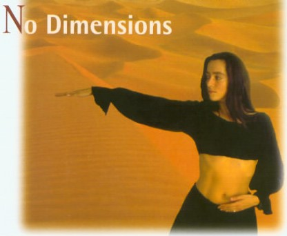

No-Dimensions-Meditation
Eine Praxis aus zentrierten Bewegungen, Wirbeln und Stille.
Sieh dir bei deiner ersten Sitzung das Video an, um Bewegungen und Phasen zu verstehen. Spiele für die eigentliche Meditation das Praxis-Audio ab, leg das Telefon beiseite und folge dem vollständigen Ablauf. Lade das Audio vorher herunter, wenn du offline praktizieren möchtest.
Praxisstil
Lies der Reihe nach: Verstehe zuerst die Anleitung für diese Phase und schau dir dann das passende Bewegungsbild an. Während der eigentlichen Meditation kannst du unten das Praxis-Audio abspielen.
Bewegungsübersicht
Studiere zuerst das Bild mit der Bewegungsübersicht und mache dich mit den Bewegungsrichtungen des Körpers vertraut. Praktiziere anschließend die drei Phasen unten der Reihe nach.

Phase 1: 30 Minuten
Wiederhole den Tanz aus sechs Bewegungen 30 Minuten lang ununterbrochen. Beginne mit beiden Händen auf dem Unterbauch und folge der gezeigten Reihenfolge.

Phase 2: Wirbeln (15 Minuten)
Wirble gegen den Uhrzeigersinn mit leicht geöffneten Augen und ausgestreckten Armen. Lass dich vom Wirbeln tragen und atme normal weiter. Ändere bei Bedarf die Richtung und werde zum Abschluss allmählich langsamer.

Phase 3: Stille (15 Minuten)
Schließe die Augen und lege dich, wenn es angenehm ist, auf den Bauch. Lass Beobachten geschehen und schau einfach auf den Energiefluss im Körper.

Die Methode ist nur ein Eingang. Ob sie Atem, Tanz, Klang, Dunkelheit, Sitzen oder Beziehung nutzt – am wichtigsten ist, allmählich zu sehen, was geschieht, statt nur einer Erfahrung nachzujagen.
Meditation beginnen · Praxis-Audio
Nutze dieses Audio für die eigentliche Meditation. Du kannst es hier abspielen oder für die Offline-Praxis auf dein Telefon herunterladen.
Erste Sitzung · Video-Anleitung
Nutze das Video hauptsächlich, um Bewegungen, Phasen und Haltung zu verstehen. Sobald du sie kennst, benutze für die Meditation das Praxis-Audio, damit du nicht ständig auf den Bildschirm schauen musst.